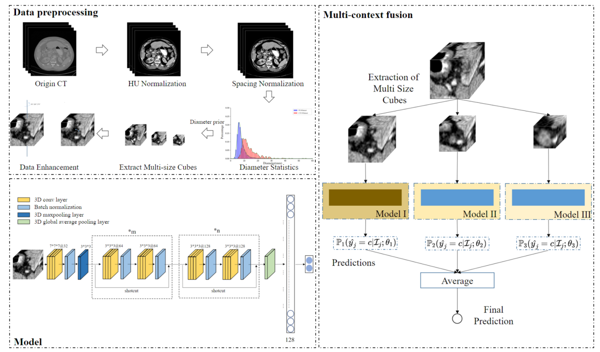
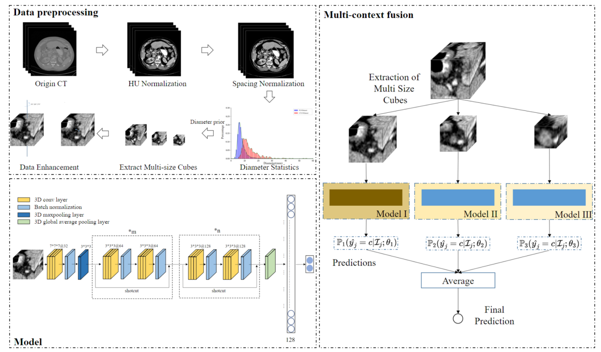

Project Overview
This study aims to develop a functional and lightweight annotation system and build a high-quality gastrointestinal CT lymph node dataset under the annotation of professional physicians. Furthermore, by leveraging big data and combining deep learning algorithms, we aim to develop a new type of colorectal cancer lymph node metastasis auxiliary diagnosis system for abdominal enhanced CT. This system is intended for clinical auxiliary diagnosis in colorectal cancer lymph node dissection surgery, assisting doctors in detecting and locating lymph nodes, thereby improving the efficiency and accuracy of clinical diagnoses.
The research on intelligent analysis technology for colorectal cancer lymph nodes mainly focuses on three aspects: lymph node localization analysis, lymph node qualitative analysis, and multi-temporal lymph node growth analysis. In the model part, I mainly participated in the lymph node localization analysis and the false positive suppression stage.
The image above shows the overall process of the false positive suppression method for lymph nodes, including data preprocessing methods, residual network models, and multi-scale fusion methods. In this study, the results output by the lymph node detection model are treated as candidate lymph nodes. In the data preprocessing stage, lymph node blocks are cropped based on the central coordinates of the candidate lymph nodes, and blocks of different scales are generated for each candidate lymph node to enhance image features. The residual network model used in this study is based on the standard 3D residual network model but with reduced layers to accommodate the input of small-scale lymph node data. For each scale of lymph node block, the research team trained a false positive suppression model and fused them in the multi-scale fusion stage to obtain the final results.
Finally integrated the model into a service using Django as the backend framework, and enabled client access through RESTful APIs. Hosted the CAD system on AWS, utilizing services like EC2, ECS, and EKS for elastic scaling.